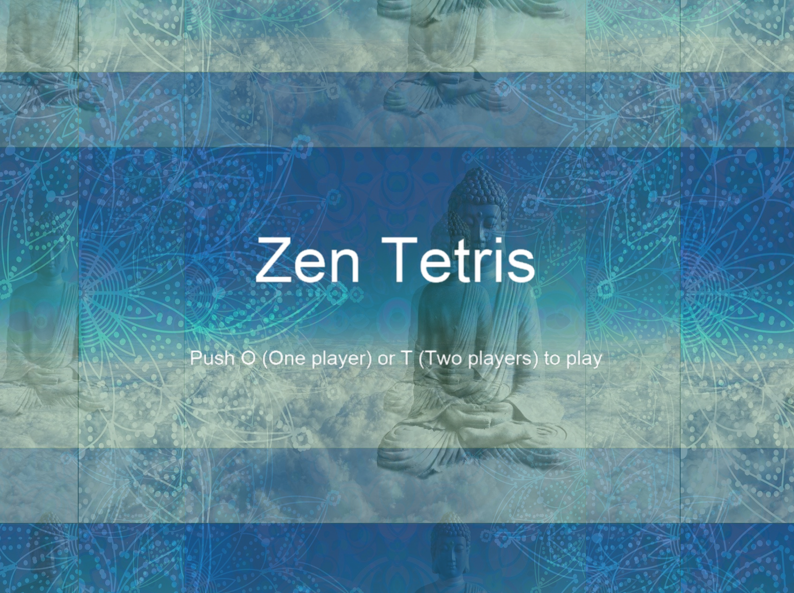

Table of Contents
1 はじめに
Pythonの勉強をしたのに、使えるようにならなかった、という経験はありませんか? この記事では、自分の挫折経験を元に、そういう方のための道しるべを提示できれば と思います。
2 自己紹介と挫折遍歴
2.1 昔はプログラマーでした
私は大学生時代、組み込み系プログラマーのアルバイトをしていました。 アセンブラーやC言語をを使って、人工心肺のステッピングモーターを制御するような ニッチなプログラミングをしていました。
私生活では、NECのPC-88やPC-98向けにゲームを作ることを夢見て、当時の有名ゲーム から借用した高速スクロールルーチンをやはりアセンブラーで作ったり、ピクセル エディターやマップエディターを作ったりしていました。更には、任天堂の スーパーファミコン向けゲームの開発にヘルプ参加しました。
2.2 脱プログラマー
その後、興味の中心は英語に移りました。業務で必要な本をあえて英語版で読んだり、 寝ても覚めて英語漬けの日が数年間続き、プログラミングからはすっかり遠ざかり ました。
2.3 挫折遍歴
2.3.1 まずはJavaに挫折
6年ほど前にエンジニアとして海外勤務する機会を得ました。日本と異なる、効率の よい開発に驚くと共に、技術力の重要性を改めて痛感しました。当時、QAあるいは Product Ownerとして開発チームに参加しており、プログラミングは必要ありません でしたが、Javaの分厚い入門書(Head First Java)を読みました。
本人の期待に反して、Javaでプログラミングできるようにはなりませんでした。 JavaはCと似ているので、Javaのコードはある程度読めるようになりました。 しかし、自分でコーディングすることはできません。Head First Design Patterns やEffective Javaにも手を出しましたが、読むそばから前に書かれたことを忘れて いく上に、特に後者は難易度が高く、挫折しました。
2.3.2 Pythonまで挫折
自分なりに挫折の原因を考えた結果、Javaは趣味の言語としては本格的すぎる との結論に達しました。そこで、プログラミング入門者や子供にも大人気の Pythonを学ぶことにしました。
テキストとして、Webで評判の良かったIntroducing Pythonを選びました。 一通り制御構造について学んだ頃、何かが違うことに気がつきます。 前に読んだことをどんどん忘れていくのです。もう一度最初から読み始め ました。しばらく進むと、前半を忘れていることがわかり、また最初から 読み直す、ということを2回ほど繰り返して、なんとPythonまで挫折してしまい ました。
3 Python再入門
3.1 挫折の原因を分析してみる
今年になって、COVID-19のおかげで自宅アパートに引きこもっていた時に、 またプログラミングできるようになりたいという意識が再燃しました。 今度はこれまでのような失敗は繰り返したくありません。自分なりに失敗の 原因を考えた結果、以下の結論に達しました。
- テキストを読み進めると、前に書かれたことを忘れてしまう
- 面倒くさがって演習をスキップしていた
- ハンズオンが足りなかった
- 手が覚えなかった
ようは、手がプログラミングを覚えるまでのハンズオンが足りなかったという ことです。
3.2 フェーズ1 - Introducing Python
テキストとして、以前使っていたIntroducing Pythonをまた使います。今回は 演習もきっちりやります。この本は、説明が簡潔で、多くの範囲をカバーして おり、なかなかよい本です。 今回は途中のコードサンプルを「写経」(エディタで書き写すこと)しながら、 何とか最後まで読み進めました。
一定の手応えは感じたものの、やはりプログラミングできるようにはなりま せんでした。例えば、「for文でループする方法」や「else ifかelifか」と いうことをいちいち見直したり、ネットで検索しないと書けないのです。
この本はPythonの「入門」には向いていない、ということにようやく気がつき ました。入門を終えた人が、頭の中を整理しながら読み進める本だったのです。
3.3 フェーズ2 - Python Crash Course
2冊目として選んだのは、いかにも初心者向けな表紙のPython Crash Course です。この本はハンズオン中心です。本文に書かれたコードサンプルや演習まで やると、実に多くの写経量です。
この本のPart I: Basicsはよく書かれていますが、Part II: Projectsは 素晴らしいです。最初のプロジェクトはPygameライブラリを使って、インベーダー ゲーム風のゲームを作ります。とりあえずPythonでゲームを作れるようになり たかった私のニーズにぴったり一致しました。
次のプロジェクトは、インターネットで集めてきたデータをグラフを使って ビジュアル化するという、実に実践的な内容です。普段、Excelなどを使って 半ば手動でグラフを描いたりしているかもしれませんが、これをPythonで 自動で処理するやり方を学べます。
最後のプロジェクトは野心的で、Djangoを使ってWebアプリケーションを 作ります。紙面の都合で説明のスペースが十分取れなかったためか、 いきなり難易度が上がります。しかし、しっかり腰を落ち着けて取り組み、 復習もしつつ演習のブログ的なWebアプリケーションまでこなすと、 非常に力が付くと思います。
この本をこなして、ようやくPythonでプログラムが書ける自信が付きました。 やはり私のような初心者の段階で必要だったのは、手が覚えるようになるまでの ハンズオンだったのです。
中上級にはほど遠いとは思いますが、ここまで来ると、ネットで検索しながら やりたいことをプログラムにしていけるようになると思います。
4 初めてのPythonプログラム自作
4.1 何を作るか
私は最初からゲームが念頭にあったので、昔PC98向けにアセンブラーで 作った対戦テトリスを作ることにしました。やりたいことが決まっている人 はそれをやればいいと思いますが、最初から最後まで自分でデザインできる ゲームを最初のプロジェクトとして選ぶことはお勧めです。
4.2 arcadeライブラリ
ネットを調べるうちに、ちまたで人気のpygameライブラリよりも、大学の 先生が開発するarcadeライブラリの方がコンピューターサイエンス的に エレガントと思い、arcadeライブラリを使うことにしました。
arcadeライブラリのサイトには、チュートリアルやサンプルが多く載って おり、まずはそれらを写経するところから始めます。Pythonの言語を学ぶ 以外に、使用するライブラリやフレームワークについて学ぶことは重要です。
その際にも、初級者はチュートリアルやサンプルコードを写経するところ から始めるのがよいと思います。
4.3 テトリスの実装
「Python」「Tetris」あたりのキーワードでネットを検索すると、実に多く のサイトがテトリスの作り方を公開してくれています。見た目や細部に こだわらなければ、150行くらいで済むようです。
プレイする仮想画面(二次元配列)やテトリスの形のデータの持ち方は 先人の知恵を参考させていただきます。
4.4 スプライトエディタ
昔作った対戦テトリスは、ブロックが一列揃ったときのキラリと光る アニメーションが売りでした。今回もそれをしたいのですが、そのよう なアニメーションをするブロックのビットマップデータは見つかりません でした。
そこで、自分で用意することにします。スプライトエディタとして有名な asepriteを購入して、自分でブロックのピクセルアートを作成しました。 Pythonの勉強という意味では寄り道ですが、こういったことも楽しいもの です。
4.5 ブロックを一つ表示する
いよいよコーディングです。arcadeライブラリサイトにあるチュートリアル のコードをベースにします。まずは、画面にブロックを一つ表示するところ からです。
仮想画面上のx, y座標と色を指定すると、その位置に指定色のブロックを スプライトとして表示するコードを書きました。簡単なデバッグの後、 ブロックが表示されます。これが最初の一歩です。
ついで、ブロックのグレー色を使った画面の枠を描きます。ループを 組み合わせて、ブロック表示関数を呼ぶだけなので、あっと言う間に 完成します。
4.6 テトリスブロックの表示
いよいよ本番、落ちてくるテトリスブロックの表示です。ネットから 借りてきた情報を参考に、データ構造は考えてあります。キー入力や スプライトの動きといった「足回り」は、arcadeのチュートリアルで 写経済みですので、本筋のロジックに思考を集中できます。
テトリスブロックの登場、一定時間ごとの落下、底に着いた判定、 回転や横移動のキー入力を含んだ長いコードを書き殴ります。しばらく 苦労してデバッグした後で、リファクタリングして処理のまとまりを 関数として独立させ、見通しを良くしていきます。リファクタリングの 考え方、やり方はPython Crash Courseで学んでいます。
一ライン揃った時のアニメーションとゲームオーバー判定を入れ、 とりあえずゲームとしての体裁が整います。
4.7 対戦テトリス化
とりあえず、普通のテトリスゲームはできましたが、これだけだと 初級者が作ってWeb公開した、無数にあるテトリスと何ら変わることが ありません。プラスアルファとして、二人のプレイヤーで対戦する 要素を入れ込みます。
画面を二分割し、左右で二人のプレイヤーが対戦するのですが、その ためにPlayerクラスを定義し、プレイヤーごとに必要なアトリビュートや メソッドをそちらに移動します。実質、一日半程度で対戦化が完了しま した。
4.8 コズメティクス
この段階で、小学5年生になる娘に感想を求めます。しかし彼女は 全く興味を示しませんでした。なるほど、見た目がいかにも地味です。 そこで、タイトル画面を作り、ゲーム画面にきれいな一枚絵を表示する ことにしました。「画像」「フリー」他のキーワードで、ゲームに 使用できそうな画像データを探します。今回は更に「曼荼羅」の キーワードも指定しました(きれいなので)。
単に一枚絵を背景に表示するだけでは芸が無いので、単純なエフェクトを かけます。タイトルビューでは、拡大率と透過率を変えて、横に スクロールさせます。ゲーム画面では、曼荼羅を少しずつ回転させて ます。

軽く効果音を入れて、完成です。また娘に見せると、今度は「ずいぶん 印象が変わったね」というお褒めの言葉をもらいました。相変わらず プレイしてくれませんが。。。
5 公開してみる
5.1 githubに公開する
Pythonで作ったゲームをインストーラー化せずに公開するにはgithubが 一番よさそうです。githubにアップロードするにはgitを使う必要があり、 泥縄でgitの用意をします。開発でgitを使うのはもちろん初めてです。
qiita等の記事を見ながらgithubのアカウントを作り、何とかプッシュ に成功します。https://github.com/achiwa912/tet
その勢いで、pygameのサイトにも載せてみます。https://www.pygame.org/project/4904
5.2 プルリクエストに動揺する
とりあえず世界中に向けて公開したわけですが、もちろん誰の目にも 止まりません。
数日後、個人宛てに奇妙なメールが届きます。どうやら、公開した ゲームに誰かがプルリクエストしてくれたようです。「プルリクエスト」 の意味さえ知らない私は動揺します。
中身を読むと、その人は、私の書いたREADME.mdの英語を添削してくれて いました。優しい人もいるものです。ありがたくマージさせていただき ました。
もう一つ、同じ方から、Fedoraで動かないという問題指摘もいただきま した。virtualbox上のFedoraで見てみたところ、指摘と同じエラーメッセージ が出ました。インストールされているOpenGLバージョンがarcadeライブラリ のサポートするバージョンより古いというもので、その旨コメントを返しました。
よくわかりませんが、OSS活動への入門をしてしまったということなので しょうか。
6 クロージング
- Pythonは比較的簡単で気軽に使え、その割に高度なことができるため、とりあえずプログラミングを学びたい人にお勧めの言語です
- 入門はハンズオン(写経)に重点を置くとよいと思います。腕は頭より忘れないので
- 1冊目としてPython Crash Courseはお勧めです。ハンズオン中心かつ実践的です
- 2冊目としてIntroducing Pythonはお勧めです。頭の中が整理され、Pythonで何ができるかがわかります